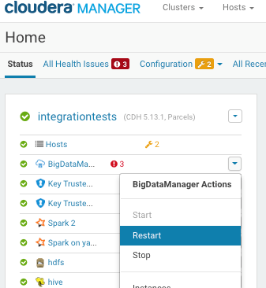
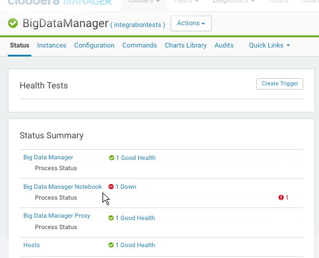
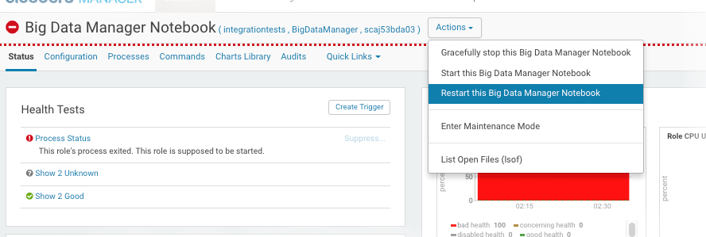

7 Using Cloudera Manager to Work With Oracle Big Data Manager
Oracle Big Data Manager is automatically included as a service in Cloudera Manager.
As with other services in Cloudera Manager, you can use the interface to monitor, stop, start, and change the configuration of Oracle Big Data Manager.
-
Log on to Cloudera Manager.
-
On the Home page, find bigdatamanager in the list of services.
Oracle Big Data Manager Roles
Cloudera Manager supports four Oracle Big Data Manager roles. Cloudera Manager provides the usual administrative, monitoring and reporting facilities for each of these roles.
| Oracle Big Data Manager Role | Description |
|---|---|
| Big Data Manager | Runs the Oracle Big Data Manager web interface and the back-end server. |
| Big Data Manager Notebook | Runs Apache Zeppelin Notebook. |
| Big Data Manager Proxy | Provides a reverse proxy to route requests from the web client to the Big Data Manager and Big Data Manager Notebook roles. |
| Hosts | Provides representations of physical or virtual nodes where Oracle Big Data Manager is running. (By default, this product runs on the third node of the cluster. ) |
Stopping and Starting Oracle Big Data Manager
On the Cloudera Manager Home page, you can you can stop, start (or restart) the Oracle BigDataManager service from the Actions pulldown menu.
Description of the illustration bdm_restart_bdm_in_cm.png
Tip:
If you stop or start BigDataManager, the same action is applied to all Big Data Manager roles. If there are problems that require a restart, you may only need to restart one role.Running Health Tests on BigDataManager Roles
You can test the health of individual roles within the BigDataManager service. In the example below, the Big Data Manager Notebook service is down.
Description of the illustration bdm_roles_in_cm.png
The Actions pulldown menu provides the actions for BigDataManager roles that are shown in the screen below.
Description of the illustration bdm_cm_restart_notebook.png
Tip:
In the case of the Big Data Manager Notebook role, the restart through Configuration Manager is equivalent to the following shell commands, which would need to be executed on the node where Configuration Manger is hosted.sudo su -
/etc/init.d/bdm-notebook restart